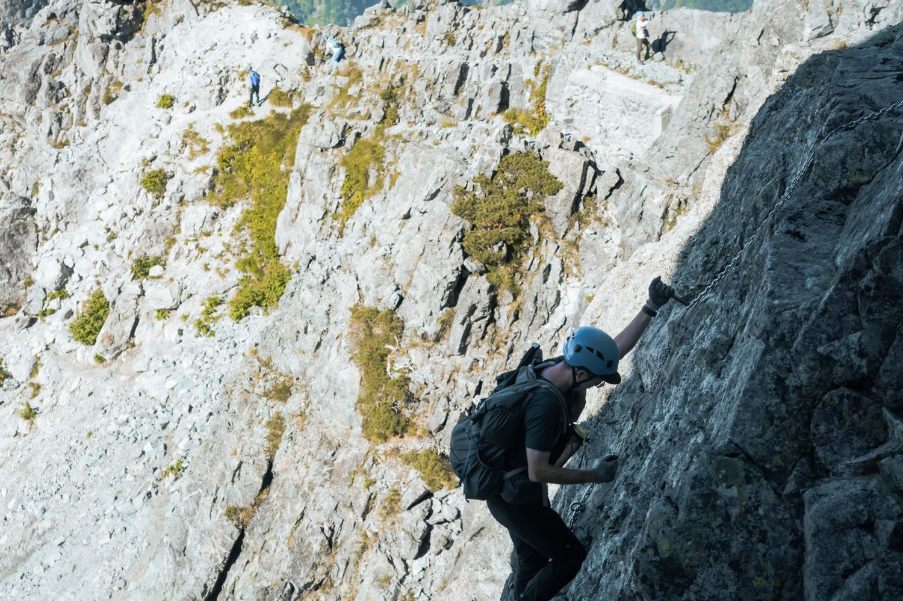
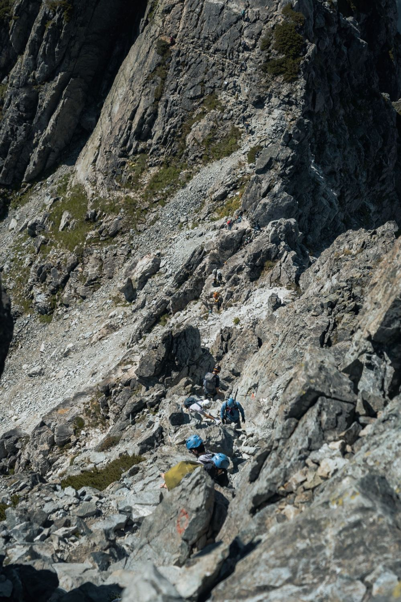
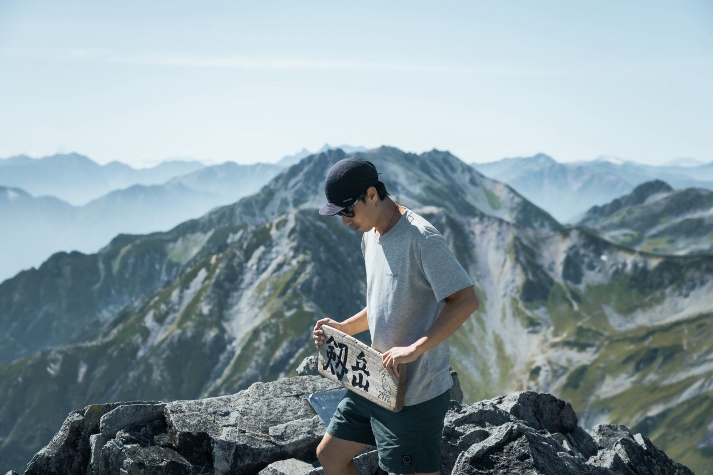
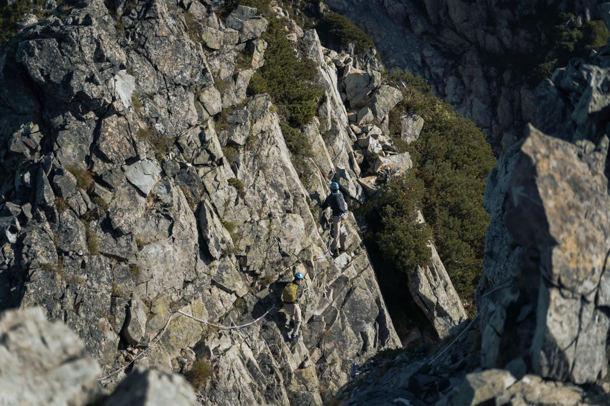
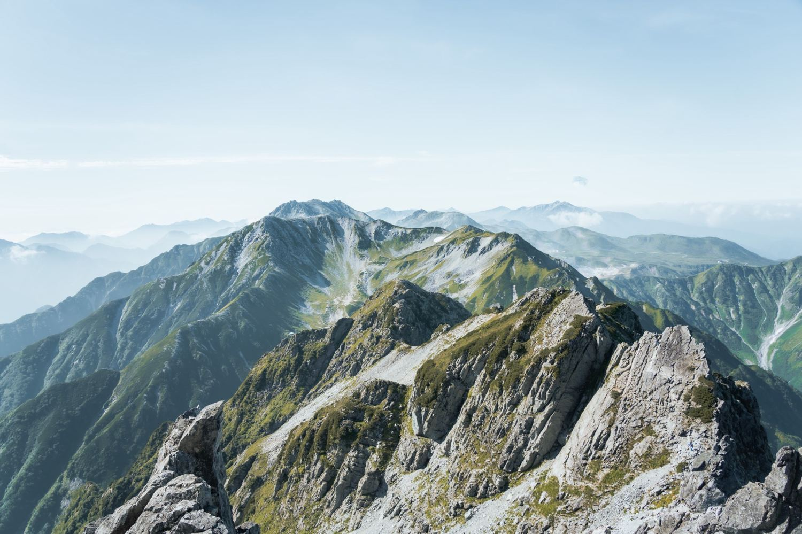
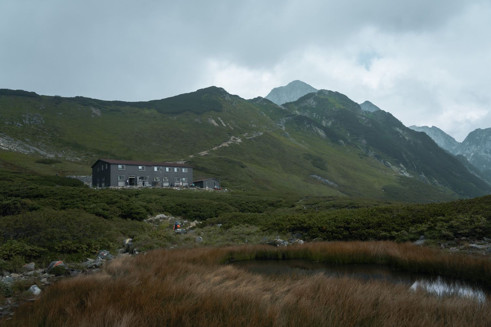
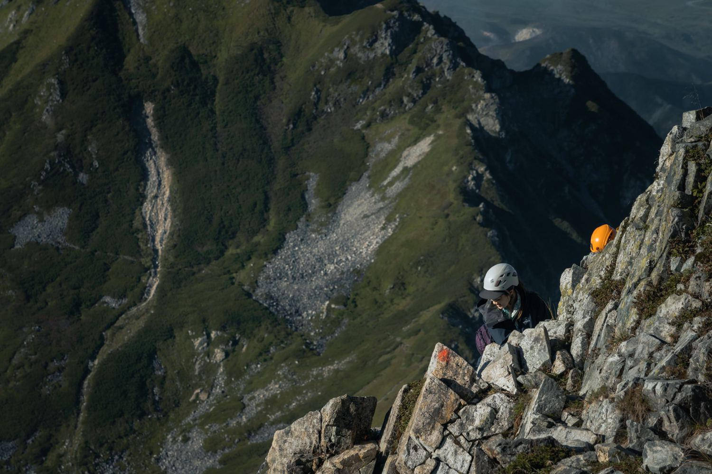
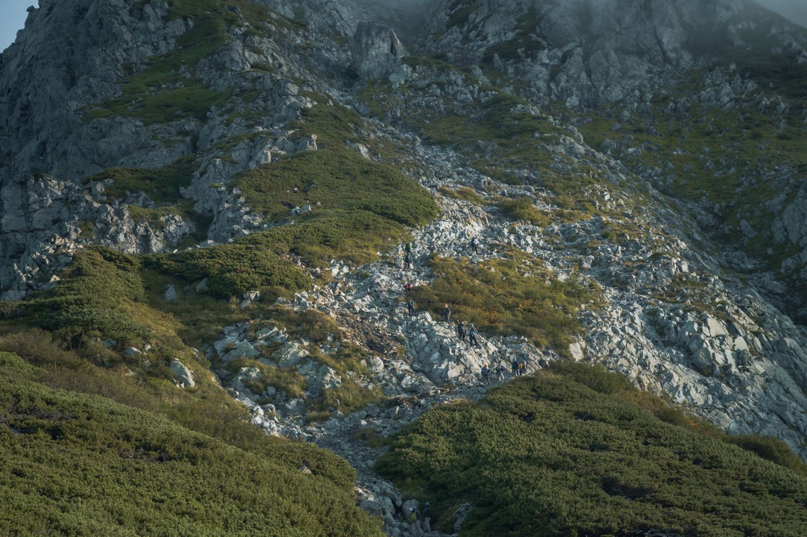
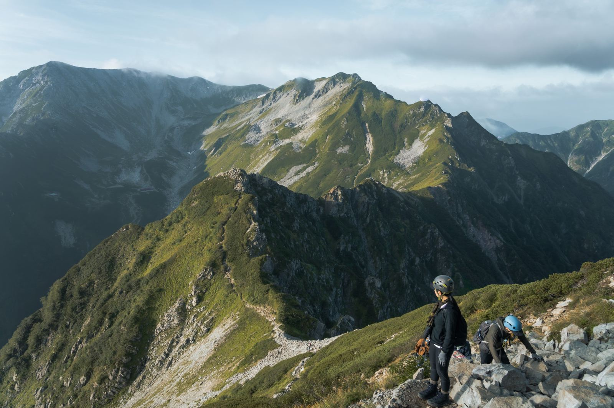

此團日期為 2027/09/19（日）–09/21（二）。行前須確認劍山莊營業及床位、室堂交通、岩稜專業嚮導、裝備與撤退方案。9 月山區可能遇到低溫、降雪或結冰；現已開放資格審核報名，山屋與專業嚮導配置待確認；正式成團及付款通知前請勿購買不可退改機票或匯款。
剱岳海拔 2,999 公尺，別山尾根路線以陡峭岩稜、鎖鏈、梯子，以及「蟹之縱行」「蟹之橫行」等難關聞名。這不是初學者的登山體驗，而是需要真實岩稜經驗、冷靜判斷與高度安全意識的進階行程。

鎖鏈、懸崖與漫長的岩稜，不以登頂作為唯一目標。安全通行與適時撤退，始終優先。
室堂 → 雷鳥澤 → 別山乘越 → 劍山莊從室堂出發，經雷鳥澤、雷鳥坂上行至別山乘越，再經劍澤前往劍山莊。當天不安排攻頂，入住後進行裝備、體能、路線與隔日天候評估；以山屋當季營業和交通時間為準。
劍山莊 → 一服劍 → 前劍 → 蟹之縱行 → 劍岳（2,999m）→ 蟹之橫行 → 劍山莊清晨出發，經一服劍、前劍與別山尾根鎖鏈、梯子、暴露地形；上行蟹之縱行、下行蟹之橫行，須依當地標示及現場狀況通過。預估為最具技術性且耗時的一天，登頂與否依天候、岩壁狀況及團員能力決定，不保證攻頂。
劍山莊 → 別山乘越 → 雷鳥澤 → 室堂由劍山莊返回劍澤、別山乘越，經雷鳥坂、雷鳥澤返回室堂。實際解散時間受天候、隊伍進度及立山黑部交通營運限制影響，請勿安排過緊的當日轉乘。
報名時需列出近兩年高山行程、暴露岩稜、鎖鏈、梯子及下攀經驗，尤其是實際路線與日期；由具備相應能力的嚮導審核，不以一般百岳經驗直接認定合格。
須準備適合岩稜的頭盔、防滑登山鞋、手套、頭燈、禦寒與防雨裝備；其他保護及技術裝備依確認後的嚮導規範安排，並須確實具備使用能力。
採小團審核，團員數與嚮導配置確認後公告。必須接受技術能力評估、提前折返及惡劣天候取消攻頂；填寫意願表不等於錄取或保留山屋。








野夥戶外・劍岳實地攝影。岩稜路線需依天候、嚮導指示及自身能力審慎通行。
※ 公告團費 NT$25,000／人；行程安排及費用包含項目以山屋、專業嚮導與正式成團通知確認內容為準。
團費 NT$25,000／人。請先透過 LINE 提交近兩年登山經歷、岩稜／鎖鏈與下攀經驗，以及參加人數，進行初步資格審核。現階段透過 LINE 接受申請；正式 Google 表單尚未建立，山屋與專業嚮導配置仍待確認。收到錄取、成團及付款通知後再匯款。